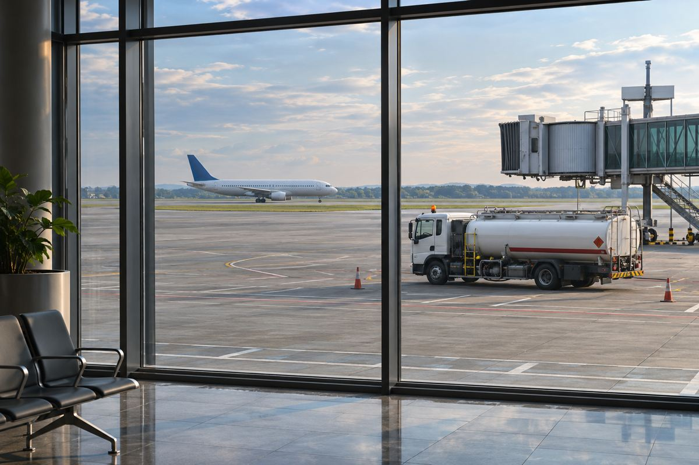

항공 / EXPLAINED
싱가포르항공그룹, 반기 매출 16.8% 증가에도 영업이익 29.1% 감소
9월 말까지 여섯 달의 실적이다. 연료비 상승을 헤지 이익이 일부 완충했다.

싱가포르항공그룹이 11월 11일 2026~2027회계연도 상반기 매출 112억9700만 싱가포르달러를 발표했다. 전년 같은 기간보다 16.8% 증가해 그룹 반기 최대였지만 영업이익은 5억6900만 싱가포르달러로 29.1% 줄었다. 순이익은 1억3400만 싱가포르달러로 43.9% 감소했다. 발표일은 11월 11일이고 실적 집계는 9월 30일까지의 여섯 달이다. 회사는 감사 전 수치라고 밝혔다.
싱가포르항공은 싱가포르를 거점으로 여객과 화물을 운송하고, 그룹에는 저비용항공사 스쿠트도 포함된다. 이 수치는 모회사 단독이나 싱가포르 공항 전체가 아니라 그룹의 실적이다. 회사는 여객과 화물의 수요가 모두 매출을 지지했다고 설명했다. 매출은 고객에게 운송 등을 제공해 얻은 금액이고, 영업이익은 그 매출에서 운항을 비롯한 영업 비용을 반영한 뒤 남는 금액이다. 매출이 늘어도 비용이 더 큰 폭으로 늘면 두 숫자의 방향이 달라진다.
지출은 107억2800만 싱가포르달러로 20.9% 증가했다. 그룹이 밝힌 반기 평균 항공유 가격은 배럴당 171미국달러로 전년보다 86.7% 높았다. 여기서 연료 가격은 미국달러, 손익은 싱가포르달러 기준이다. 연료의 단가가 올라도 항공편 수나 구입 시점이 달라지면 실제 총비용과 같은 비율로 움직이지 않는다. 이번 자료에서도 헤지 전 연료비 상승률은 90.3%이고, 헤지 효과를 반영한 순연료비 상승률은 56.0%다.
헤지는 앞으로 지불해야 할 연료 가격의 변동에 대비하는 금융 거래다. 시장 가격이 오를 때 일부 부담을 상쇄할 수 있고, 반대로 시장 가격이 떨어지는 시기에는 미리 정한 조건 때문에 혜택이 제한될 수 있다. 회사는 전년에는 손실이던 헤지가 이번 반기 이익으로 바뀌었다고 설명한다. 그래도 순연료비는 39억7400만 싱가포르달러로 증가했다. 헤지 성과가 있었다는 사실과 연료에 지급한 전체 부담의 변화는 서로 다른 항목이다.
반기 전체와 2분기만 떼어 본 실적도 다르다. 2분기 영업이익은 4억6300만 싱가포르달러로 전년 동기보다 16.3% 늘었다. 회사는 1분기 영업이익 감소가 반기 실적을 끌어내렸고 2분기 개선이 이를 일부 만회했다고 설명했다. 순이익에는 관계기업의 손익과 세금도 영향을 줬다. 따라서 반기 순이익 감소율을 두 분기에 동일하게 적용하거나 연료비 한 항목으로 전부 설명하기 어렵다.
공개 수치로 영업이익을 매출로 나누면 이번 반기 영업이익률은 약 5.0%다. 전년 반기의 영업이익 8억300만 싱가포르달러와 매출 96억7500만 싱가포르달러로 같은 계산을 하면 약 8.3%다. 매출 100달러에 남는 영업이익이 줄었다는 설명이다. 그룹 전체를 같은 기준으로 본 계산이므로 항공편 한 편의 이익이나 항공권 한 장의 원가를 나타내지는 않는다.
편집부는 운항 수요와 연료비 부담을 함께 보여 주는 실적으로 본다. 이 결과만으로 특정 한국발 항공권이 얼마나 오를지, 특정 노선의 편수가 줄어들지 알 수 없다. 항공권에는 판매 시점, 좌석 공급과 경쟁편이 함께 작용한다. 11월 실적 공지가 제시하는 것은 과거 반기의 수입·비용과 분기별 흐름이며 다음 반기의 연료 가격과 실제 운항 결과는 추후 자료를 봐야 한다.